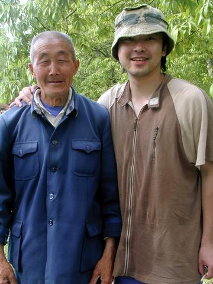
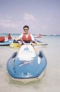
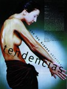
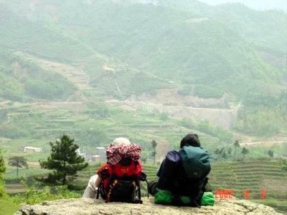
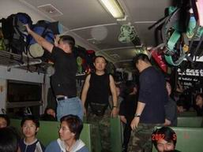
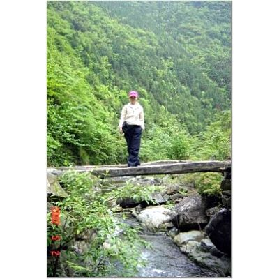
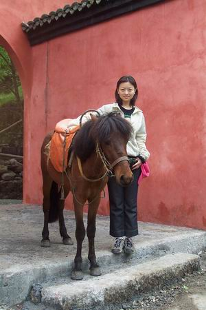
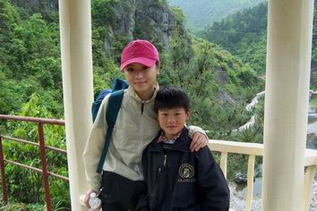

Archives : 2002-05
2002年春季在植物园 @ May 31, 2002
——与GRACE认识到现在大约15年了，不知道是否可以品出茶香来？！人们常说女人的友谊比较短暂，一般在一方或者是双方有了婚姻和家庭之后而疏远、冷淡。不象男人的友谊...可我怎么也不相信。
GRACE告诉我她是灰色，我是红色的，可她告诉我那会儿我们还是少年儿童。现在我倒希望GRACE是红色，而自己是蓝色的。GRACE曾经将我们5个少年时代的好朋友写进她的武侠小说，依稀还记得“秋寒”这个侠客的名字在GRACE的小说中。有一天，我去GRACE家作客，她从桌子下面翻出一些纸张和本子，仔细一看是我少年时期画的画，GRACE说：“就是受你影响我才喜欢上画画的，你看我还保留着你的画册呢！”
真正的朋友未必要天天见面，可一见面必定还有很多的话题和思想能交流。真正的朋友在对方需要的时候，会毫不犹豫的出现在朋友的身边。我喜欢的方式就是将爱和友谊放在心里，放在心里的感觉很好！
我喜欢的SHOP @ May 31, 2002
——这是我经常喜欢逛的商店，只要路过就可能走进去看看。有时候可能是被商店的摆设和氛围所吸引。

寂寞咖啡之5月25日 @ May 31, 2002
——2002年5月25日，下午在五台山看晚球赛，走到新街口地下过道时，一个灯箱广告画很吸引我。一看是意大利品牌的男装广告，意大利品牌的商品越来越多的出现在中国市场。

——同样是傍晚，乐富来那个大的显示屏下面聚集了很多看球赛的人群，那天是中国队VS葡萄牙队。

早上就让我开心！ @ May 30, 2002
今天发现自己的文章上了西祠的胡同口，虚荣心有点满足哦！文章名为《谁和父母同住》。
遭遇同性恋 @ May 30, 2002
在TIGER CAFE上我们有3篇讨论关于同性恋话题的文章，一篇英文两篇中文的。非常有趣的话题，并且发现一些访问者是从http://www.littleyellowdifferent.com/上连接过来的，那里是同性恋群体经常活动的一个个人网页。
同性恋在中国是被鉴定为精神病患者的范畴。作为生活在中国的我来讲，第一次知道“同性恋”这个名词是我16、17岁的时候，别人告诉我某女人和某女人是同性恋。事实上我对这样一个群体也存在着好奇心理。我刚刚工作的时候在我姨妈家附近有个“星期五酒吧”，据说是同性恋聚集的地方，不过也有人传说是“鸭子”聚集的场所。不去论70年代之后出生的人,中国人还是含蓄、保守的，含蓄到周围的人很难察觉得到谁是同性恋，当然我得承认我的视线因为过于简单的生活而略显狭隘。
去年也就是2001年4月20日出版的《中国精神障碍分类与诊断标准》第三版中，同性恋不再被统划为病态。在中国大陆称“同性恋”为“同志”。曾有过同性恋行为的人，城市已婚居民中占0.5%，农村已婚居民中占2.3%，在大学生中占7.5%。近年来，中国有男女同性恋者3600万人到4800万人，男同性恋者居多。虽然同性恋在人群中所占的比例仍属少数，但是绝对数量巨大，对大多数人来说，同性恋仍是一个神秘的群体。
我的男同事去杭州的工厂出差，工厂厂长的儿子在国际贵族学校上学，很巧厂长儿子的语文老师也在：一个矮且敦实的 年轻男子。晚上厂长将我的男同事和这位语文老师安排在同一家酒店不同的房间住宿。晚上语文老师敲门，说自己房间的空调不运作了，要求共同使用我的男同事的房间。同事便答应了。
半夜的时候，语文老师上了我的男同事的床，并且小鸟依人般的欲与我的同事缠绵，男同事不依，谁知语文老师会擒拿格斗，按住同事手上的穴位，使得他动弹不得。我的男同事只好软硬兼施，苦苦等到天亮，终于夺门而逃！回到南京之后，语文老师还打过电话给我的男同事，吓得他报名参加了拳击训练班。
我想同性恋在中国已经不是什么很新鲜的事物，随着近几年的媒体宣传，中国人对同性恋的态度越来越宽容和客观。中国同性恋被摘掉“精神病”的帽子是社会的进步，同性恋能否得到更多的法律保护？同性恋婚姻能否在中国出现？恐怕还需要一段时间。
徽杭古道合影 @ May 28, 2002
——耶！我们这里面有人在练“紫阳神功”哦？！好象是我后面的那个....兰花指还挺标准的，嘻嘻！
NICK,SHERRY,JIAJIALING,CHRISTINA,HANK,MARINE,FENGJIE AND STELLA

徽杭古道-6 @ May 28, 2002
——中国劳动人民和小日本鬼子的一次友好合影。
GAFFER & NICK

曾经 @ May 28, 2002
心沉到骨盆，想念盲目的快乐。我常说女友BESS“傻乐”，想着如果可以傻乐也是很幸福的，不是吗？
—曾经我有过美丽的笑容在15岁到25岁之间；
—曾经在1997年，我烫了齐腰的长发；
—曾经被人纯粹的爱着；
—曾经纯粹的去爱；
—曾经崇拜军人，并追随着自己的梦想好多年；
—曾经掉到河里，差点儿被淹死，当时我想“大难不死必有后福”；
—曾经养过一只黄色的大猫，偷偷和它睡一个被窝；
—曾经勇猛无比的追求自己的爱情；
—曾经想过自杀；
—曾经在某个街角停留，因为是那么熟悉的街角；
—曾经失眠并怀疑自己得了神经衰弱；
—曾经居住在不同的城市里；
—曾经因为听见第一次打雷的声音而害怕，那时刚随母亲搬迁到南方；
—曾经不知道“枪炮与玫瑰”是个组合还是一首歌；
—曾经在所谓的艺术圈子里，无病呻吟；
—曾经的快乐也失去了明亮的色泽；
—曾经每个月的零花钱为2元；
—曾经在小学三年级被母亲狠狠的打了一顿；
—曾经无忧无虑的生活在农村两年；
—曾经滚烫的唇，如今已变冷；
—曾经相爱过的人，现在有的只是冷漠；
—曾经伴随着使人透不过气的“关注”长大；
—曾经捉迷藏躲到别人家的米桶里；
—曾经吻我的人，现在娶了别人；
—曾经的纪念日成了银行存折上的密码；
—曾经对我吟唱动人歌曲的歌喉，现在在对谁唱；
—曾经温柔看着我的眼神，现在给了谁？
......
曾经交代了一切，曾经也掩盖了一切，曾经让我明白，曾经也让我恋恋不舍。曾经让端着的咖啡变冷...
MC HOTDOG @ May 27, 2002

从他，一个高高瘦瘦，戴着黑框眼镜的平凡大学生，原本只是自制的一卷demo带，竟无心插柳成为台湾有史以来无法估算最大发片量的地下唱片，靠的是学生网络族群的烧录；从他可以由2001年的开春正式唱片发行到2001年6月推出第三张唱片，累积的唱片销售量突破二十二万张，无疑颠覆流行音乐的传统窠究，因为无论中文饶舌被误为数来宝或者向来西方音乐不为东方再造的错误认知，直到MC HotDog的出现，中文饶舌已然投给台湾音乐市场最大冲击。
这个周末我在听MC HOTDOG的歌曲，是朋友自己刻录的光盘，并且从网上下载打印的歌词。多少有点异样的感觉，就好象拿着什么黄色小说的手抄本一样。起初，坐在我后面办公的老兄，有一次很神秘的问我是否听过MC HOTDOG的音乐，我说没有。于是他让我听了一两首MC HOTDOG的歌曲，从他那里我得到对MC HOTDOG的一些启蒙教育。后来五一节旅行期间，我想和同行的JIAJIALING交换音乐听，看他很犹豫的表情更刺激我一定要知道他的MD里面有些什么不可告人的东西。原来是MC HOTDOG的歌曲，JIAJIALING认为给我听这个不太好。...仔细听他的歌曲还是在这个周末，听得我心惊肉跳，那是不同于我的另一种生活。在轻松讽刺风格底下，是坦白诚实的自省，写出自己的心声。
中文Hip Hop饶舌会蔚为一种流行，带领这股风潮的会是MC HotDog。MC HotDog在客观上已经成为台湾Hip Hop音乐的代表，他是整个台湾饶舌乐的开创者。相较之下，诸多歌手与大众媒体等之间的互动频繁，MC HotDog的MV不但因为“饶舌本质 ─ 真实的创作语言”而遭禁播，且在饶舌尚未登入台湾主流音乐市场之际更是鲜少有媒体曝光。但是历经一年来，他在各大校园或Pub等地的现场表演总是人山人海，即便从来不听Hip Hop的人也都开始从他的歌入门。MC HotDog刚出唱片时曾经在访问中半开玩笑的说，母校辅大的同学都只知道蔡依林却不认识他。不过一年不到，MC HotDog已经拥有广泛的知名度了。
周六的上午我都在用我那个去年新买的音响听MC HOTDOG的音乐，记得那句“就让我来RAP….”以及那句“我的生活放荡...”，当然还有很多歌词写得绝顶的尖锐和刻薄。当听到《韩流来袭》里面那句不断重复的骂人的话时，我真担心我父母会听见。听他的歌曲的时候，我感觉我和他一样的甩，一样过瘾的去唱，甚至他富有节奏感的音乐让我刷牙的时候腿也不能闲着。在他的音乐面前我还需要掩饰什么呢？
网络上介绍《男生女生 呸》这首歌探讨的是现代爱情观，他写这首歌的想法是想狠狠干谯一下通俗情歌创造出来的虚拟美好世界，一如往常歌词还是非常MC HotDog式的风格，一针见血的指出“有人认为死缠烂打就能一辈子，可是对方只想干十五分钟一下子”，看完他的歌词真叫人哭笑不得，但是又能直击内心深处某个记忆或是常听到的说法，也许爱情真的没那么美好，至少听完MC HotDog的歌我们可以笑一笑。
一个人的视线（写于2001-08-25） @ May 19, 2002

昨天是三伏天的最后一天，刚刚学了美语里“三伏天”的单词，在家看《Sword Fish》，片子开头部分听到主人公说“dog day”这个单词，现在对三伏天的这个单词应该是不会忘了的。所以今天异常的凉爽，不冷也不热。刚巧今天又是外婆去世42天，家人早早起床，不知道在忙些什么，或许是我并不想知道他们在忙些什么吧。骑了自行车没有计划性的外出了，如果不出去转转真的很对不起这么凉爽的天气，另外一个原因也是心情使然。不知不觉得就骑到那所经常散步的校园。
寥寥无几的行人，高大茂密的梧桐树将这条校园的主干道装饰的很幽静，唯一嘈杂的是穿堂而过的秋风。我骑车路过那些宿舍区到达操场。所幸的是操场上也同样的萧条和冷清，它没有我想象得那么大，虽然我曾经不止一次的穿越和行走在上面，并且它承载着我不为人知的心情。我将车停靠下来，翻身坐在路边的水泥护栏上，面向操场，身后是一排整齐的松柏树，松柏的枝叶覆盖在我头顶一米左右的距离。这里不会有人经常路过，因为路的尽头交通不方便或可以说是死胡同吧。所以我喜欢选择坐在这里，这里很安静，安静只可以聆听自己心跳的声音。操场上长满绿草，非常葱翠的颜色，并没有因为秋的到来而黯然失色，这是一个很不错的足球场地，南北向都有两个球门，茂盛的草地在学生返校之后必会衰弱下去。我享受这情景代给我的心情，坐在这平日里那些浮躁的情绪会渐渐沉静下来。莫名的感动起来，一种温热的液体漫溢在眼眶中。
没有原因！
寂寞咖啡之5月18日 @ May 18, 2002
现在是午夜1：40分，我睡意全无。
晚上和GRACE去南大听刘家琨的讲座，他是个建筑师，1984年毕业之后仅做了一个工程的设计就开始过自由的生活：写作。直到1990年才又回到他的本行中来。用他的话讲，做自己的专业，越专业越好，如果可以从自己的专业中跳出来，到其他行当转转，这样可以从不同的角度更好的去理解和诠释自己的专业设计。

听完老刘GG的演讲从正对南大正门的教学楼出来，和GRACE步行到南大生活区，突然在今夜，对这座校园有了很多的感觉和感情。虽然前男友JOHN是从这里毕业的，可我从未对他的母校有诸多深刻的印象，想必是那时太迟钝的缘故吧？！

——路边新做的指示牌。哦，“强化部”在东大楼。JOHN后来念的是物理理论专业，听说物理专业的学生最聪明。原来那时侯的我是自作聪明啊？！
我对南大的印象之一：他的妹妹当时还在南大的外语系念书，有一次她在路边的过道上拴了一张网，和她的同学打羽毛球来着，我和她哥哥骑车路过时，满脸是汗的她穿着一件红得耀眼的汗衫远远的朝我们挥手；
印象之二：生活区南门旁边的网球场。刚工作那会儿，JOHN和我经常在这里打网球，我们一起到新华书店买指导初学者如何打网球的书。每每路过那个网球场，几年前那些晴朗的下午，我们和同事在网球场上打网球的情景马上从记忆中跳出来，清晰可见；
印象之三：那会儿，JOHN才工作第二年，经常回南大和他上研究生的同学一起聊天一起玩。他告诉我他们强化班40个学生，当时就只有5个人在国内或工作或上学，其余都出国深造了。那时侯我认为南大的学生好厉害！同时因为他，我对理工科出生的人很有好感也很有安全感。

——南大运动场
出了生活区是广州路，夜市上的小商品摊子零星的占据着人行道的边缘。上次来这里是四月一个星期六的下午，漫天飘着梧桐树上的小毛毛，有点风也有点热。我在广州路上的一家小店里挑音乐碟，一个朋友正好打电话给我，假惺惺的嘘寒问暖一番，当时我真想跑过去看看他装模作样的表情。
走着走着，看见街对面的“川香元食府”，恩，那也可以算做我对南大的印象之一吧！96年，JOHN带我来吃这家的四川小吃，那时的川香元食府猥琐的缩在广州路肯得基快餐店那个路口的东面位置上，外面搭了一个简易破旧的棚子，屋内几张油呼呼的桌子、凳子。好象店名不叫现在这个名字，叫“赖汤圆”什么的。那时侯我还不能吃辣，所以吃的时候，脸一直红嘴唇发麻，搞得我在他面前更加窘迫。（据说能吃辣的人可以做一家之长。）JOHN告诉我，他和他的同学都喜欢这家店的口味。1998年我开始频繁支持“赖汤圆”在金鹰购物中心美食广场的餐饮事业。不仅因为我喜欢上四川菜的口味，另一个原因是用餐的同时，顺便看看“赖汤圆”那个赏心悦目的年轻老板。他经常一个人坐在客人用餐的座位上，看看报纸或者用他单眼皮的眼睛酷酷的看着来来往往的客人。后来再没有见到他，听说他的老婆生孩子他回家去了。
... ...
我尽量放慢脚步好延迟离开南大的时间和距离......

——留学生宿舍

——这是我喜欢的“答案”酒吧，靠近南大。酒吧的老板养了好几条狗，还有高大的猎狗。他们家的狗狗象他们的主人一样具有自由随意的气质，不怕生人。有一公一母的小狗狗，主人从不拴养，任他们在酒吧里来回走动玩耍。只要有机会我都会上前拍拍他们的脑袋，有时为了抱一下还得帮他们挠痒讨好他们。据说后来那条公狗和别的狗狗私奔了！（私奔？恩，应该是很浪漫的事情吧？！）这些狗每天在酒吧里听流行乐和轻摇滚，想必一定很有音乐细胞，呵呵！
“答案”酒吧曾经有个男歌手，剪着整齐的刘海，后面扎了个独辫子，很清瘦的模样。听说当时他在攒钱准备做变性手术。有一次我去那里“醉生梦死”，果真看见他隆起的胸部，并且是非常彻底的女性化打扮，我马上狠狠地想象：如果...如果...要是...怎么办？再之后去“答案”一直没有再见到“她”！
点滴泰国印象（写于2002-02-13） @ May 16, 2002
—签证
不用签证前往泰国？！是的。也许对大多数中国人来说，不用事先申请签证而前往一个国家是令人惊喜和难以想象的，但这是国际上许多国家为吸引和方便外国游客的一种通行的做法，包括泰国和中国。只不过能接受持中国护照的人享受此待遇的国家少之又少。
当然，享受此待遇您必须具备一定的条件
第一，您必须持有有效护照或相应的旅行证件
第二，您必须持有已确认的，在15天内离开泰国的有效机票
第三，您必须在抵达泰国后，在移民局填写申请表并缴纳300TB的签证费和两张近照照片
中国公民获落地签证后在泰国的允许停留时间为15天
注意：虽然泰国方面给予了中国护照持有人落地签证的待遇，但也许是国情方面的原因，此举并未得到中国方面的配合。如您没有泰国的签证，中国边检是不会放行的。所以，中国护照持有人要享受落地签证的待遇，必须经第三国前往才能使用。
—了解泰国
在泰国，只要是旅游景点，路牌、标识牌上有中英文字，甚至还有日文和韩文的文字标识。泰国旅游部门还特别设立1155电话号码为游客投诉、请求帮助提供方便，可以使用中文和英文拨打这个电话。由此也知道中国人在泰国旅游收入的份额中占了不可忽视的一部分。泰国政府一年可以从旅游业中获取70亿美圆的收入。泰国是以农业为主的国家，是世界上著名的大米生产国、出口国和创汇国，是亚洲第三大海产国，世界第一大产虾国。另外，泰国的工业如采矿、纺织、电子、塑料、食品加工、玩具、汽车装配、建材、石油化工等进年来也发展很快，尤其是汽车制造业，其相关产值已位居东南亚首位。截止1999年底，泰国的平均国民生产总值为1850美元（中国大陆为783美元）。
泰国中央政府辖下的行政区分为府、县（分县）、区及首都直辖市和自治市镇。全国共有73个府，675个县，78个分县，6812个村。泰国的货币单位为铢（BAHT），一美元约可换42铢；一铢为一百沙丹（SATANG）；硬币有5沙丹、10沙丹、25沙丹、50沙丹、1铢、5铢、10铢七种；纸币有10铢、20铢、50铢、100铢、500铢、1000铢六种。
泰国的时间早于格林威治时间7小时。晚于中国1小时。华侨和泰籍华人约有400多万，占泰国总人口的8%。在当今泰国政府中，不乏有华人后裔担任过或正在担任政府总理、副总理、议长和部长等重要职务。
—曼谷
曼谷的交通十分发达。泰国的铁路和公路都以曼谷为中心，通往全国各地。曼谷市以北大约20公里的廊曼机场是东南亚地区的主要航空中心之一，还是运输量最大的国际航空站，国际航线可直飞亚、欧、美及大洋洲50多个城市。曼谷港是泰国最大的深水港口，是泰国和世界的著名稻米输出港之一。曼谷是泰国最大的工商业城市。而每当暮色降临，各种娱乐场所、餐厅酒吧灯红酒绿，人行如织。各种各样的歌厅、歌舞厅、KTV、按摩院、浴室、酒吧、夜市等处人头攒动，给夜色中的曼谷披上了一层神秘的、多彩的、而又美丽的面纱。正因为曼谷的这种现代与历史的紧密结合，使她成为东南亚最有魅力的城市之一。
—曼谷国际机场
决定一个人到泰国去旅游，从办护照到出发前后两个星期不到。毫无兴奋感的上了飞机，2月2日凌晨1：30分左右到达的曼谷（BANGKOK）国际机场，这个机场也被称作“廊曼机场”（后来大家称它为“浪漫机场”），各种肤色各种装束的人从这里进进出出。
从南京飞到曼谷俨然是从冬天走到夏天的过程，这个过程用了3小时40分。步出曼谷机场，仿佛一头扎进了桑拿浴房。机场出口处一些女孩子身着泰国的民族服装，浓妆艳抹，手捧着鲜花制成的花环，静静地坐在角落里，使我马上联想到南京火车站上拉客人住旅店的中国女孩儿。跟随泰国的导游走到我们乘做的大巴门前，还没有等我反应过来，一个同样浓妆艳抹的泰国女孩往我的脖子上挂上一支花环，然后双手合十站在我的身边，同时一个男子举起照相机拍下一张照片，几乎每一位客人都会得到同样的“礼遇”。后来才知道这样的“礼遇”原来是需要付钱的，没过两天有人就会拿着这些照片到我们乘坐的大巴前出售，一张照片100铢，折合人民币20元。大概那些在机场看见的泰国女孩就是经营这类生意的人。
即将返程回南京的那天，才发现曼谷国际机场里面随处可见的免税商店，游客可以从免税店购买两条烟、两瓶酒，多了则不允许。很多中国人都会在那里买中国出口过来的中华烟，价格在270元人民币左右一条。对香水及化妆品好象没有什么规定，我买了三瓶国际名牌的香水，都是最新出来的系列，一共才109美圆。外国化妆品进口到中国，进口关税为100%，到了商场里加点利润，大家可以算一算。我姐姐在美国花了40美圆买了一大瓶CD的紫毒系列的香水回来送人，在南京的金鹰国际购物中心，同样的香水人民币价格卖到了1000左右。LANCOME的眼霜在香港买同样规格的只要200多元人民币，在国内卖到475元一瓶。难道中国人的钱在国内用就这么不值钱吗？收入没有外国人高，消费却高出别人的一倍，不可理解！想想上海的浦东国际机场和南京的禄口国际机场，那里免税店的商品可没有曼谷的品种多，更别说金发碧眼的老外了，在曼谷旅游的日本人、韩国人、俄罗斯人、印度人、中东人人数也不少。曼谷机场的侯机室就有70多个。
—大皇宫
2月2日上午9点钟从酒店出发到大皇宫参观。大皇宫包括一所建在皇宫里作为国王举行宗教仪式的佛寺—玉佛寺，都在1782年开始建造，总面积218，000平方米，环绕着整个大皇宫的宫墙，长约1，900米。泰国的国教是佛教，百分之九十的人口信奉佛教,也有回教，基督教等各宗教。无论大小各种宗教，均受宪法保护，法律地位平等。泰国是一个佛教国家，寺庙林立，佛像雕刻随处可见，故又被称为“千佛之国”和“黄袍佛国”。玉佛寺建在大皇宫北边的位置上，佛寺的四周有走廊环绕。泰国人民最崇敬的玉佛就供奉在大雄宝殿中的一座金色的高座上。玉佛依照泰国一年三季的时间更换锦衣，更换锦衣的仪式由国王亲自主持。参观者进入玉佛寺周围的走廊时就必须拖鞋，穿有袖子的衣服，男性穿长裤女性穿长裙或者长裤，玉佛寺内不能拍照、摄像。之后在大皇宫的其他景点我照了一些照片，里面的建筑确是金碧辉煌，据说那些建筑和塑像上原先镶嵌的都是宝石，后来国王将大皇宫作为游客参观的景点，宝石全部换成了玻璃。
—鳄鱼潭
吃完午饭参观泰国北榄鳄鱼湖动物园，入口处工作人员给每位游客发一张小纸片，上面有一股清凉油的气味，参观鳄鱼潭的时候，时不时有种难闻的气味，那时侯就可以嗅嗅这张纸片，感觉会好一些！从这个细节处看得出来泰国的旅游业服务是我们国家不能相比的。
—汽车
说到汽车，不能不提的是在曼谷的公路上行驶的大部分是进口的名牌汽车，听导游讲汽车的进口关税在泰国为零，很多的家庭都会先购车然后再计划买房。中国驻泰国大使馆大门的两侧就是二手车市场，这样的二手车市场在曼谷随处可见，在我看来那些二手车真的不象是二手车哦，很新、款式也很不错，在看看那些品牌，哇噻！宝马、丰田、奔驰…我们乘坐的大巴士就是奔驰牌的。后来从PATTAYA（芭提雅）回到曼谷住在湄南河边上的MENAM RIVERSIDE HOTEL，晚上和团里熟识的几个人坐三轮摩托车到曼谷的唐人街，发现乘坐的三轮摩托车是丰田牌的，出租车也是“丰田”的。别看是三轮摩托车速度可不比汽车慢。
—购物
跟着泰国的导游，你就不用愁购物了，导游会推荐游客去某个购物点购物。当然去的那些购物点并不是路边摊的那种。如果你在导游推荐的购物点购买了假货，你可以向泰国的旅游部门投诉。在曼谷的购物点：
1．泰国曼谷的SG珠宝中心，共三层卖珠宝首饰。所以大家在外出前一定要多备用些计划外的MONEY。本来用来玩的钱用来购物了，最后玩的时候钱不够。
2．皮具展销中心，那里有琳琅满目的鳄鱼皮、珍珠鱼皮、大象皮制作的各种皮具用品，大象皮做成的皮具最便宜，最贵的是鳄鱼皮，珍珠鱼皮价格适中。一条鳄鱼皮带在皮革中心卖到1000-1200元人民币一条，可是后来在金沙滩上同样质量的皮带只要几百块，甚至更便宜，就要看你的侃价功夫了。导游会对游客讲，金沙滩上的皮具是假货，让我们都不要买那里的皮具产品。一位大姐在金沙滩买了一只珍珠鱼皮的皮包，皮革中心的价格明显高于零售商贩的价格。质量似乎并不是导游说的假货质量。不过买珠宝最好还是在大的珠宝中心购买比较放心。
—泰国的狗
在泰国的街头、寺庙、旅游景点经常看见狗，它们慵懒的躺在地上睡觉，在泰国的旅游期间没有看见哪一条狗在奔跑或者是在玩耍的，几乎都是躺着或者坐着，或者是懒洋洋地来回走几步，俨然没有野性了。泰国的狗都是由寺庙或者是好心的人喂养，街上就是他们的家，泰国不允许杀狗，所以狗儿们都是自生自灭，泰国的狗大部分都比我们在中国农村见到的土狗长的胖些。因为那里的天气太热的原故，一些狗有皮肤病，最好不要用手去摸他们。它们也并不怕人，和人友好相处。这么多的狗放在中国，若不是被杀了吃，就是被打狗队捉了宰掉。一天晚上从曼谷的唐人街回酒店的路上，看见一只母狗在污秽的人行道边生小狗，不停扭动着身躯，看不出表情的眼睛，特别的让人同情。不过生活在泰国城市里的狗总比生活在野外的狗幸福的多，不是吗？
—芭提雅（PATTAYA）
芭堤雅位於曼谷东南147公里处的春武里府(Chonburi)。上个世纪的六十年代，芭堤雅只是泰国湾东岸的一个小小渔村，是越战期间的美国人发现了芭堤雅，认为是一个度假休闲消遣的优良海滩，於是从1961年4月开始，驻扎在泰国东北部乌汶(Ubonratchathani)的美军基地人员，一遇休假就涌向芭堤雅这个美丽的海滩。从此，默默无闻的芭堤雅开始了飞速的发展，并迅速成为泰国最著名的海滩渡假胜地和东海岸的一颗璀璨明珠，被誉为“东方夏威夷”。

芭堤雅的夜生活更是多姿多彩：正宗的泰式古方指压按摩、泰国浴、桑那浴，服务小姐们除了服务品质一流外，更有不少会用华语交谈，各具特色的卡拉OK-KTV、DISCO和酒吧表演，还有享誉已久的人妖歌舞表演等等。
—三条有特色的街道
中国人常被导游拉着去这里或者是那里集体消费去了，在芭提雅自由活动的时间几乎没有。泰国导游还会适时的吓唬游客，比如：客人们不想晚上出去看SHOW想在酒店打牌，导游会说泰国政府不允许打牌，如果发现的话要被罚款，结果同团有的人打了牌也一样的相安无事。导游还会说晚上千万不要出去啊，这里的黑社会多啊。想想哪里没有黑社会啊，中国就没有了？同团的人很多到了最后才打算“冒险”独自去街上逛逛，还没品出个味儿，就要离开泰国了。我最痛恨这样走马观花式的旅游，匆匆忙忙看过之后就走。
从半山腰我们居住的酒店坐敞篷的士到靠近码头的闹市区，上面可以做8、9个人，费用120铢，漫步在芭提雅灯红酒绿的街头，迎面走过来最多的不是泰国人而是欧美人，据说北欧的人喜欢到那里度假。芭提雅的夜生活会持续到凌晨5点钟结束，早上大家起床很晚。有三条有名的街道“鸡街、鸭街、鹅街。”前两种大家都知道，最后一条街名之所以叫“鹅”，是因为去那里人和那里的招待不男不女，或者是同性恋者。
闪烁着粉红色灯光的店面，全部是敞开式的，很有热带风光的味道，凉棚下面有一圈吧台，吧台里面坐着泰国小姐，光顾的大多数是欧美人。客人和小姐喝酒或者聊天，有的小姐在吧台后面的台子上跳钢管舞。毫不掩饰的，没有任何墙或者是遮挡物，寻常的就象路边吃大排挡的某个小饭店。我们这些国内去的人也并不觉得奇怪和诧异。一切在芭提雅都是那么的自然。
—SHOW
导游推荐了一些自费的项目，一些是在晚上看各种各样的色情表演。他推荐的节目有：金丝猫秀、一支独秀、夜巴黎、神秘综合、气功等等。我只观看了“金丝猫秀”同团女的只有我一个人去，加上男的大概9、10个人，门票是800铢。起初我还有点不好意思，结果进去之后发现老爷爷老奶奶挺多，女同胞的数量不比男同胞少。表演者清一色欧洲过来的20岁左右的女孩，表演没有我想象的暴露，往往等你看见全裸了，灯光就熄了。看完表演出来，到了二楼，看见一些漂亮的女孩子，穿着低胸的晚礼服，坐在玻璃窗后面的台阶上，身上挂着号码。这就是“美人鱼”了。她们等着客人挑选，陪客人去唱歌或者是一同去洗澡。有一些美人鱼非常漂亮，当然脂粉气也是很重的。导游说她们都是在校的大学生，因为高昂的学费和家庭负担，晚上出来做这个，白天照样在大学里读书。都会英文，有的还能说一点中文呢。客人在一个女孩子身上最贵的花费为1000人民币左右。
—人妖
在曼谷观看的人妖音乐歌舞表演，后来到了芭提雅有在公主号上和人妖狂欢。对人妖也算稍微有些了解。导游告诉我们，人妖的家庭都是家境比较贫寒的，一个人出来做人妖，牺牲一个人，可以养活一家人。所以我们不可以歧视它们。
人妖也分高中低档，高级的人妖从小就开始吃避孕药，以增加体内的雌性激素，慢慢长大成为人妖之后，是看不到喉结的。做变性隆胸手术需要很多钱。一般不愿意经常外出，因为它们爱出汗，毛孔会大。它们还会经常吃燕窝，以保持皮肤细腻。一个人妖每个月的收入为5-10万人民币，但是他们为了保持自己女性的特征每天在吃药吃燕窝的费用支出上也是可观的。人妖一般活到45岁左右。
—古式按摩
从事古式按摩清一色都是30岁左右的女人，非常正规的按摩。两个小时600铢，相当人民币120元。按摩完之后，感觉的确是相当舒服的。建议可以尝试一下。
—请为中国人争光，同胞们！
一件在曼谷机场亲眼看见的事情，特别让我感到难过。一个中国男人一只手推着行李车，一边和身边的家人说话，大摇大摆的朝这边走过来，两个老外坐在我们附近，中国男人的行李车碰到了两个老外的行李车，车子上的行李差点撞到他们的头，那个中国男人毫无表情的看了他们一眼，连走路的节奏和步伐都没有紊乱，若无其事的走开了。两个老外瞪大了眼睛，相互望了望…..然后摇了摇头。我们也在惊讶这个中国男人怎么能够这样的若无其事，连句“对不起”都没有说。并且还是一副理所当然的表情。我真为他作为中国人感到耻辱！！！
在曼谷机场或者是在泰国的某个旅游景点，就好象一个浓缩了的国际社会，从每个国家来的游客都代表了这个国家的形象。中国人到泰国旅游的人很多，光是接我们这个团的泰国旅行社从2月1日开始一直到春节期间，一共要接待500个从中国去泰国旅游的旅行团，平均每个团人数在25人。很多人都有随地吐痰的习惯，并且在公共场合大声喧哗、抽烟。在泰国很多场合下都不能吸烟，如果吸烟的话要被罚款的。周围的泰国人，其他国家的游客都只会把你看作是中国人而不是某某人，我们必须意识到我们是中国人，我们必须要注意自己的礼貌和形象！我们出去代表的是中国！！！
有个笑话:一个中国的旅行团到国外旅游，在外国的机场导游不断的对大家讲：“请小声点，小声点讲话！”旅游结束回国，在中国机场，导游扯着嗓门说：“你们大声点，我听不到，大声点。”
旅行图片
幸福生活之洪泽湖、盱眙篇（写于2001-08-12） @ May 16, 2002
洪泽湖、盱眙之行（一）
7月6日住在洪泽湖度假村，下午泛舟于洪泽湖上，看见很多船，大部分是货船，还有一些平时不多见的帆船。站在船头吹风，似乎还有点《坦塔尼克号》某些镜头的感觉，呵呵！行至洪泽湖中，远远是政府花费了300万修建的一座避风港，在西行的太阳照射下有着悠悠然的韵味！据说修建避风港的位置，经常有船只在恶劣天气的情况下发生事故，风大的时候可掀起十几米的大浪。
洪泽湖、盱眙之行（二）
在湖中遇见很多的船，航道上显得很拥挤。由于雨水的缺乏，湖水水位明显下降了很多，有的船搁浅在泥沙中。所以大家都很小心的行驶，以免偏离航道。
来来往往的船舶在湖面上形成了一个浓缩的社会。我尤其被那些搞运输的夫妻搭档所吸引。船上仿佛累积了他们的一切，他们的爱情结晶，他们的狗、自行车，几件简单的家具，晾晒的衣服还有被风吹扬着的蚊帐。那些主妇们但凡都有着健壮的身体和黝黑的皮肤，在船头不停用毛竹测试着水位的深浅或者在不大的敞开的房间中做着家务。孩子们闪烁着稚嫩的目光观察他们家以外的世界。这画面给我许多内心的温馨感受！若和自己爱恋的男子这样生活一辈子，即使生活的艰苦也不能消磨我们对爱的追求和体验，那将是一个多么美好的理想啊！
洪泽湖、盱眙之行（三）
泛舟结束，和几个同事一起打网球。已经好几年没有打网球了，连打球的架势都没了更别说技术了。网球使我想起一个人，那段时间一直有规律的打网球，买了水滴型的适合初学者使用的宽面网球拍，还有一本学习打网球的书，在艳阳高照、酷暑的夏季依然会前往五台山露天场地打球。不涂防晒霜不担心自己的皮肤会衰老，在烈日下骑着自己工作之后在五一节购买的新车吃力而愉快的爬上五台山的那个坡子，而今玩的时候却如何生出了这么许多的顾虑和烦恼！时间真的可以改变一切，只是改变不了记忆和记忆中的感觉！
洪泽湖度假村里有一个游泳池，还算清澈的显现着绿色的池水透着诱人的凉意。打完网球浑身是汗的我只在池边站立了几分钟，便穿着短裤和汗衫越身进入游泳池，这样做真让人畅快！我在池里忘情的游上几个来回，这池水似乎可以彻底洗刷净平日里那些莫名的无奈，可将那些繁文缛节之下淤积的压抑感一并抛向上帝。呵呵，真的好畅快！（你是否看见我由衷的微笑）
洪泽湖、盱眙之行（四）
因为放纵自己的行为，我必须早早洗浴，将湿衣服晾晒出去，且不能到餐厅吃晚饭，我等待夜晚等待睡意降临。
我从酣睡中醒来的时候是早上04：27分，第一个念头就是去看看衣服是否干了。当我走进临湖的阳台时跃入视线的是天上的月亮，它镶嵌在泛着鱼鳞波纹的湖面上，隐约穿梭在岸边随微风摇荡的柳枝里。你知道吗，这夜的月亮尤其的圆，四射的光线绚丽的穿过眼睛直达人的心灵深处，在那里开出一朵洁白的小花。四处一片静谧、幽暗，一股鬼魅的气息丝丝的游离开来，牵动人的魂魄！我跑进卧室拿出相机....希望洗出来的照片可以记录下当时的光景，那一瞬间的美！
洪泽湖、盱眙之行（五）
7月7日前往盱眙县城。
一个地方亦或是一个都市正如我们每个人，处于社会之中，有的人是复制批发的，有的人是素描是油彩画，还有的人是版刻和石雕....盱眙县城在我看来是复制批发的一类。没有特点的街道和建筑，行人寥寥无几越发显得冷清！不过县政府在旅游开发上还是存在一些意识和经济头脑的，并且龙虾也使得这座小城名声大躁！（待续）
雪糕的遐想（写于2001-08-14） @ May 16, 2002

晚上带狗狗出去溜，看见一个打扮入时的女孩非常投入得摆动她的脑袋从不同角度去吮吸手中拿着的一支雪糕。看得我当时也异常的投入，甚至希望此时此刻手中也可以有一支与她相同的雪糕，让我可以象她一样旁若无人的一边享受雪糕的快乐，一边急急赶路，全然没有周围环境的存在。
我知道我可以得到一支与她相同的雪糕，但是我知道我一定做不到象她那般的尽情享受……
为何我不能尽情享受雪糕的快乐呢？
我知道我可以得到一支与她手中相同的雪糕，但是我一定不可能象她那样忘情的品尝雪糕代来的快乐。就一直用手拿着，想着如果我吃了它以后还会有这么好吃的东西吗？还有机会可以用手拿着触摸着它吗？如若我旁若无人，其实我是多么的希望自己旁若无人的尽情享受快乐的感觉，但是我做不到我好担心周围人的目光，担心他们说一个成年人居然象一个弱智般的吃东西。他们仍然会忽略事物本身的美好所导致当事人的忘我和不自觉的投入！而我的确不是一个心理强壮的女孩，我的成长即意味着失去很多美好纯粹的东西，失去追求自身感受的勇气！
于是，我就这样拿着它直到它在我的手中融化为水。顷刻间连想象的载体也没有了，感情无处投放。那终究成全了的究竟是什么？
五月的旅行（二） @ May 15, 2002
早上7：30分乘上从绩溪开往鱼龙川的中巴车，票价好象是3元或者是1.5元钱一位，不一会儿司机告诉我们鱼龙川到了，我们在一个村子里下了车，并且我就近在一户农家开的小店里给水壶灌满了开水。向农家人询问是否能够灌点开水的时候，我的心里还做好了付钱的准备，结果农家人根本就没有提这个要求，倒让我感到有点不安。
我们问清去江南第一关的路，步行穿过村庄田地，村庄里面的房屋一律白墙黑瓦和伞状的屋顶，总之是很典型的徽派建筑风格。一路上都是令人窒息的动物粪便的浓郁气味，时常遇见农家人挑着的担子里装满了湿稻草，气味实在是难闻。想来是将稻草和粪便混合在一起，用作耕地的肥料吧？！一些农家人在稻田里耕作，我们走了约半小时到达虹溪桥，那是一座没有护栏的水泥桥，很宽。桥下的河水清澈，一天的艰苦行程就此开始了。
由虹溪桥上山在逍遥谷的北侧山路上，8：45分时到达海拔345米左右。海拔700米左右到达徽杭古道的江南第一关，这一路风景极好！经江南第一关到黄茅培，这一段需要大约一个半小时的路程，全部为上坡。山上有明显的山路，基本上是石子和土混杂的路面，偶尔会有一段一段的石头台阶。男孩子们的身上几乎都背负着30公斤左右的背包和行李，虽然我的背包最小，可是也把我的肩膀勒得够呛，有明显的疼痛感。遇上石阶路心里那个恨啊，石阶路反而比土石路难走，主要是必须按照它的距离迈出脚步，常常筋疲力尽的状况下很沉重的迈着相同大小的步伐。你说恨不恨？
出黄茅培后，走上简易的山间公路，虽然比不了上坡时让人感到的痛苦，但是每个人身上的背包和行李也足以使人气喘吁吁，步行约一小时到达计划用午餐的“逍黄线98-049”号电线杆，当时已有两三个团队的人在附近休息用饭。（看来这条线路的名气不小。）
从电线杆的位置顺着小路下到谷底，一座由三根灰白古旧的树干搭起的小木桥显现在眼前，过了木桥，大家决定在谷底开始我们此次行程的第一次野外烹饪。恩？当我写到“第一次”这几个字时，我心里在想为什么人们总是喜欢对“第一次”情有独钟、难以忘怀呢？事实上很多事物的第一次并不完美，不是吗？正如我们这次野外的第一次午餐，主食：方便面。除了有点小时侯要春游时的那种新奇和兴奋感之外，烹饪的基本过程就是用酒精炉烧开水然后泡方便面。我们每个人带的最多的就是方便面了。以至后来不得不将成为行李负担之一的许多方便面送人了之。（后面会介绍另一次的野外烹饪情形，那比较有趣。）
廊桥遗梦 @ May 14, 2002
 ......几星期之前,我感觉自己很有自制能力,也还很满足.也许内心深处并不快活,也许有些寂寞,但是至少是满足的.现在这一切都改变了.现在很清楚,我向你走去,你向我走来已经很久很久了.虽然在我们相会之前谁也不知道对方的存在,但是在我们浑然不觉之中有一种无意识的注定的缘分在轻轻地吟唱,保证我们一定会走到一起.就像两只孤雁在神力的召唤下飞越一片又一片广袤的草原,多少年来,整整一生的时间,我们一直都在互相朝对方走去.
......几星期之前,我感觉自己很有自制能力,也还很满足.也许内心深处并不快活,也许有些寂寞,但是至少是满足的.现在这一切都改变了.现在很清楚,我向你走去,你向我走来已经很久很久了.虽然在我们相会之前谁也不知道对方的存在,但是在我们浑然不觉之中有一种无意识的注定的缘分在轻轻地吟唱,保证我们一定会走到一起.就像两只孤雁在神力的召唤下飞越一片又一片广袤的草原,多少年来,整整一生的时间,我们一直都在互相朝对方走去.
那条路真是奇怪的地方.我正开车蹭来蹭去时,抬头一看,就在那八月里的一天,你穿过草地向我走来.回想起来,好像这是必然-不可能是另一样-这种情况我称之为极少可能中的高概率.
......
《廊桥遗梦》是1995年十分引人注目的一部影片。记不清楚我是95年还是96年看的了，但是却清楚记得是与我的前男友一起在他家里用电脑看的，是个夏季，我穿着当时特别喜欢的真丝白底蓝花的长裙，白色圆领短袖上衣，就是我放在主页右边的那张照片，那是他95年5月份在清凉山公园给我拍下的，它一直深得我的喜爱。遗憾的是看到片子最后的时候，他居然走开了，任我一个人在电脑前哭的昏天黑地。当时我才20岁左右，但我立刻就喜欢上这部影片，后来买了VCD作为收藏。
影片的情节十分简单，其中的情绪表现却十分细腻，女主人公之所以会对男主人公产生感情，其中很重要的一个因素就是她在长年平淡的婚姻生活中被迫放弃了原来的生活理想而埋身于琐碎的家务之中。所以当充满了自由气息的男主人公出现时，她就情不自禁地为他所吸引。影片尽管有着细致入微的婚外恋情体现，其所表现出的仍然是一种较为正统的维系家庭的主题。因此，在影片中可以深切地感受到周围环境对男女主人公的潜在压力和主人公矛盾的心理。影片中的女主人公在再三决择之后还是选择了家庭，其对家庭的责任感占了上风，其传统的道德观也使它易于为人们所接受。
《廊桥遗梦》被评为95年最具影响力的十部影片之一。克林特·伊斯特伍德和梅丽尔·斯特里普这两位资深演员在片中的表现也都十分出色，情绪把握十分到位，情感表现极为细腻，为影片增添了无穷的魅力。《廊桥遗梦》的故事不知道感动了多少人，在被拍成影片之前，小说的小册子就在中国广为畅销，出现了“廊桥热”。
当我们看到在这么短的时间里结识的男女主人公就要永远分离的时候，就好象回忆与初恋情人的分手一样感动了，没有时间去细想这对于弗朗西斯卡的丈夫是否公平，很多看过影片的朋友甚至认为弗朗西斯卡应该和罗伯特一起远走高飞，如果那样，这个故事就不会象现在这样感动人。所以，与所有的爱情俗套一样，“分离”依然是这个故事的感动点。最终，影片很负责任地回归了正统道德，而此时，我们竟发现我们感到了“委屈”，这到底是怎么了？
 影片中的男主人公由好莱坞老牌影星“城市牛仔”克林特·伊斯特伍德饰演，同时他还是影片的导演。克林特·伊斯特伍德是美国影坛最受欢迎的硬汉明星、导演和制片人。1986年他还当选为卡梅尔市市长，成为继里根之后又一位电影明星出身的政客。《廊桥遗梦》已是克林特编导的第十六部影片 ，他事业的颠峰是在1995年，那年，他以《不可饶恕》一片获第65届奥斯卡最佳影片奖、最佳导演奖。
影片中的男主人公由好莱坞老牌影星“城市牛仔”克林特·伊斯特伍德饰演，同时他还是影片的导演。克林特·伊斯特伍德是美国影坛最受欢迎的硬汉明星、导演和制片人。1986年他还当选为卡梅尔市市长，成为继里根之后又一位电影明星出身的政客。《廊桥遗梦》已是克林特编导的第十六部影片 ，他事业的颠峰是在1995年，那年，他以《不可饶恕》一片获第65届奥斯卡最佳影片奖、最佳导演奖。
 影片的女主角由美国首席演技派影后梅丽尔·斯特里普出演，有意思的是，梅丽尔·斯特里普在影片开拍前接受采访时表示她对影片中的弗朗西斯卡这个人物十分厌恶，但表演归表演，她的表演功夫的确让人钦佩，情感和心理活动表现的都极为细腻，使影片推出后人们很自然地接受了她的角色。克林特·伊斯特伍德和梅丽尔·斯特里普两人的形象与读过小说后我们想象中的十分吻合，再加上一流的表现，可以说，这部影片的成功就是由他们二人构架起来的。
影片的女主角由美国首席演技派影后梅丽尔·斯特里普出演，有意思的是，梅丽尔·斯特里普在影片开拍前接受采访时表示她对影片中的弗朗西斯卡这个人物十分厌恶，但表演归表演，她的表演功夫的确让人钦佩，情感和心理活动表现的都极为细腻，使影片推出后人们很自然地接受了她的角色。克林特·伊斯特伍德和梅丽尔·斯特里普两人的形象与读过小说后我们想象中的十分吻合，再加上一流的表现，可以说，这部影片的成功就是由他们二人构架起来的。
寂寞咖啡之5月11日 @ May 12, 2002
不得不看完那场让人不能回味的足球赛，舜天VS亚泰，此时“未曾爱过已无情”的感觉。幸好“舜天”队没有赢，不然我不知是哭还是笑？看着看着身体尽然有些不能自持的颤抖起来，今生或许都与现场看比赛无缘了。 第一次看球赛看见足球宝贝，她们的表演仅仅几分钟，宝贝们虽然身材不错，可是“力量”上的感觉太差，太柔弱了，想到四个字“花拳秀腿”。
第一次看球赛看见足球宝贝，她们的表演仅仅几分钟，宝贝们虽然身材不错，可是“力量”上的感觉太差，太柔弱了，想到四个字“花拳秀腿”。
中国人就喜欢跟风，看别人有足球宝贝了，自个儿也要弄个花样出来。中国的盗版也是最多，盗版的音像、仿造的名牌商品。比如法国国际品牌LV，在欧洲LV都是在专卖店里销售的，而不是专柜。购买者只能购买限定额之内的LV的皮具（LV公司这样做，是要限定LV皮具在市场流通的数量，好体现LV品牌的价值和地位），使用LV也是身份的象征。一般一只平时上班用的LV女包的价格在3、4千法郎左右，可是多少年前中国满大街的人就开始背LV的皮包了，不仅商品盗版和仿造的多，就连爱情也是可以复制和备份的，中国人就是牛。
走出五台山体育场，看见路边新开了一家“五台山健身会馆”。一直打算报名健身的，一来可以打发多余的精力，二来想锻炼身体，三则可以结交新朋友并通过他们了解不同生活中的人和事，四可以给自己的生活多一点色彩和体验。从小到大对这个世界我一直拥有一颗强烈的好奇心，人有点好奇心不是一件坏事。它促使你了解世界，认识世界，然后理解、包容这个世界，由此过好自己的生活。现在我就特别想过好自己的生活，尤其是在一场输得彻头彻尾的足球比赛之后，这个想法对于年纪不算大也不算小的我来讲似乎更加的重要。
与朋友几人走进五台山健身会馆，工作人员的服务意识好象还不错，一位销售经理带领我们参观了整个会馆。这是全省规模最大的健身场所，设备总投资1600万元，总面积达5000平方米。健身项目齐全，设有有氧训练、形体雕塑、瑜珈功、芭蕾舞训练、游泳、健康团体操、群体自行车（SPINNING）、水中韵律操、健美、壁球、搏击等专业训练项目，以及营养吧、桑拿洗浴、停车等配套服务。其中一个项目我觉得特新鲜，就是群体自行车（SPINNING）。据说是欧美流行健身项目。在专业教练的指导下，伴随着震撼的音响，享受超迪吧刺激的疯狂运动所带来的美妙感受。恩，现在我的确需要些刺激。分年卡，季卡和月卡，价格分别为RMB2800，RMB1000和RMB480。如果游泳池开放之后，年卡的价格将提高到RMB4000。离开后和朋友讨论了一下，觉得还是先办张季卡感觉一下，如果自己能坚持下去并且那里的感觉也不错，再办年卡。
最近交往了若干个新朋友，从前就认识，可是最近才熟识起来的。旁人一定好奇，怎么认识了那么久，现在才熟识了呢？非要有个解释的话，可以宿命得将其归纳到”缘份“的范畴。听过一句古朴的话吗？“命里有时终须有，命里无时莫强求”。我在感情上不是个积极的人，也不愿做个感情的乞丐，其实我不是个宿命论者。喜欢一个人亦或是爱，需要彼此间的欣赏、关爱和相互的尊重。尊重对方以及有关对方的一切，比如尊重对方的工作、生活方式、表达方式甚至是尊重彼此的恋人和家庭。友情和爱情应该如一朵吸足养分的玫瑰花自然而然地绽放，对此我没有一丝怀疑并且信奉这个原则。
得到 @ May 11, 2002
象故意疏远的一些亲近，都在一个城市，离得不远，相聚却又不容易。一个电话，一封信，余下七零八落的感觉等着相见。我有很多匆忙和闲暇的时候路过你，很多比渴望见到你还要难以实现的事。谁也不知道，某个时辰，有人在想念你，有人匆匆的路过你，然后深深的望一眼。
谁说过的？在你得到什么的同时，你其实也在失去。
得到。我们的得到总是也是具体的，有形的，有限的。比如爱情，你得到的其实是许多种之一，而在想象中、在得到前才是无限的，才拥有无限多的可能。
尽可能丰富的人生，也只是人生的一种，你无疑是失去了关于单调人生的那份体验。常年累月就只有那么稀少的几位朋友，闭门静守的习惯，每每黄昏独自漫步的滋味，又将是怎样的呢？
当我们呱呱落地什么都不拥有时，我们是无限的，我们面对无穷多的可能。当这个小生命穿上了第一件肚兜的刹那，就决定了第一次只是穿它而不是穿任何其他的，就失去了第一次“其他”的机会，就破坏了他的第一无限感。
在青春期前，关于“爱”的可能也是无限的。当你得到了一个具体的爱人，便凝固了其余的可能。而当你有了一大堆爱人，可任你将感情随意抛洒之际，你甚至更惨，你肯定是失去了毕生只爱过一个人的全部体验（象许多美丽的故事所描写的那样），而且这种可能再没有了。
每天每天，我们都在失去。为了不失去，我们延缓决断的时间。
无限感对我们说——
你可以是......
你可以是......
你可以是......
我们以踌躇不决来守住我们的无限感，可是时间不放过我们，生命在催促我们，甚至可以向我们收回！连踌躇不决的权利都最后失去。
当我们完完全全踏入成人的行列，做小孩子时所拥有的万般选择的可能的感觉当然也最后的失去，最后失去了。
为什么追求时的心境不同于得到后的心情？为什么会“不过尔尔”？
——当一个渴望达到之际，那份无限感也随之结束了。
好在，我懂得了，一个人只能选择一种生活。“尽可能丰富的人生也只是一种人生”......骚动不安的心就此安静下来。我终于屈服于生命的局限，在这一屈服面前，我感到前所未有的充实。当我满心倔强，不甘愿承认这件事实时，我空虚，面对茫茫然可供选择的世界不知所措，对得到的一切都不满！因为每一次得到都在加重我的失落感......而现在，独自坐在这儿，夜深人静，听电脑里播放《东京爱情故事》插曲的钢琴版旋律，我出奇的安静。
五月的旅行（图片十六） @ May 10, 2002
—我们第一个晚上是在“浙基田小学”驻扎过夜的，那时侯学校也正在放假，不大的校园越发显得冷清。为了多点娱乐，男孩们摆POSE模仿芭蕾舞《四小天鹅》的造型，呵呵...挺象那么回事儿的，他们都挺认真的，不是吗？

五月的旅行（图片十七） @ May 10, 2002
—我拍下了这副画面，两个可爱的恋人，一路上黏糊得让人羡慕！看见这副画面让我联想到卡通片上两个可爱的小人儿坐在月亮下数满天的星星。

五月的旅行（一） @ May 09, 2002
五月一日晚上22：17分的2521次列车开往绩溪方向，硬座普快票价25元。候车室里人山人海，基本上都是外出旅游的年轻人还有车站上随时都可见到的农民工兄弟。这种形式的旅行使我不免有些得意，但是当我见到火车车厢两边的行李架上放得满满的背包和野营用具时，方才知道自己并非什么标新立异的一族。

我的背包和同行的伙伴们的背包放在一起整个是孙子和爷爷的感觉，我并没有为这次旅行特意购买登山包，只是随便拿了去年公司集体旅行去黄山时发的普通背包来用。我打算在火车上睡觉的，可是到了凌晨3：34分伙伴们仍然兴奋的说说笑笑，好象还在玩什么“杀人”的游戏，恍惚间感觉他们还特认真地作着案件分析。只有我一人坚持平时的作息时间在午夜12点前靠在窗户上强制自己睡觉。火车多次在不知名的小站上停留，每每我们都会将脑袋伸出窗外好奇的张望一下，顺便呼吸呼吸车厢外面新鲜凉爽的空气。
5月2日，早上5：20抵达绩溪火车站，雾很大。从车站出来步行大约20分钟左右，我们在路边的一家叫“吉强”的饮食店准备吃早餐。两间房间，里面稍微干净一点的房间全被我们和我们的背包占据了，等吃饭的工夫大家赶紧洗漱。早餐还算丰富，有稀饭、鸡蛋、馄炖，还有受到我们欢迎的笋子饼。
（待续）
五月的旅行（图片三） @ May 09, 2002
—一处不知名的潭水边，水色碧绿如玉，我就叫它“碧玉潭”，在碧玉潭的潭边即使干吃白米饭，也幸福了！

五月的旅行（图片八） @ May 09, 2002
在一所尚在修建的小庙里遇见了这匹小马，仅4岁的年纪。

五月的旅行（图片九） @ May 09, 2002
小九华山的一座小凉亭中，这个13岁的小男孩乘着放假帮家里来卖点东西，从他那里我买了一瓶“娃哈哈”的矿泉水，特别喜欢他的眼神中的清澈和善良，然后我掏出一块巧克力给他想表达一下我对他的喜爱。可是我们相互挣扯了几个来回他仍然没有拿。他的眼神中所透着的光芒是很难在我周围人中捕捉得到的，我不可能掩饰自己，他的眼睛仿佛看穿我的心。，那时侯我真的有点为他的眼神陶醉！
